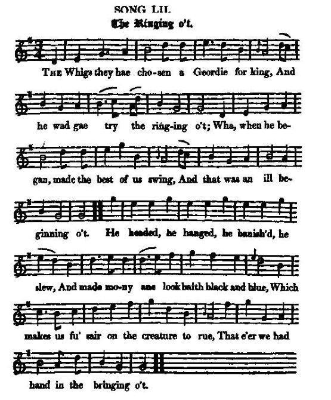

The Ringing o't
Le son des cloches
King George I, Koenigsmark
Tune - MélodieWellknown tune (often part of meddleys)
from Hogg's "Jacobite Reliques" part I, N°52
Sequenced by Christian Souchon


|
THE RINGING O'T [1]
1. The Whigs they hae chosen a Geordie for king, [2] And he wad gae try the ringing o't; Wha, when he began, made the best of us swing, And that was an ill beginning o't. He headed, he hanged, he banish'd, he slew, And made mony ane look baith black and blue, Which makes us fu' sair on the creature to rue, That e'er we had hand in the bringing o't. 2. We might hae weel kend he wad never do good, He was aye sae fond o' the knuckling o't; At hame, in Hanover, he kill'd, in cold blood, A pretty young Swede [2], for the cuckling o't. He's witless, he's worthless, he's cruel, he's proud, He's aye the best pleas'd when he does the least good. O wae worth the time that ever we should Hae had the tid o' the ringing o't! 3. Since we've been sae mad as to choose sic a thing, It's time to be wise, and get ridding o't; We'll send him a-packing, the silly bit king; Alack, for the weary striddling o't! Let's clout him and kick him quite out o' the throne, Wi' a' his base fry, to the dub that's his own, And bring hame the lad that's our sov'reign alone: Then hey for a blink at the bleeding o't! [4] Source: "The Jacobite Relics of Scotland, being the Songs, Airs and Legends of the Adherents to the House of Stuart" collected by James Hogg, published in Edinburgh by William Blackwood in 1819. |
LE SON DES CLOCHES [1]
1. Ce sont les Whigs qui prirent Georges pour roi. [2] Lui voulut voir comment les cloches sonnent, Sur les meilleures pesant de tout son poids. Ce mauvais début ne réjouit personne: La hache, la corde, l'exil, l'épée même Rendirent plus d'un à la fois sombre et blême. D'avoir contribué, nous nous mordons les doigts, A faire venir l'énergumène. 2. Quand il heurtait avec la jointure des doigts, Nous savions à qui nous avions affaire: A Hanovre il avait tué de sang froid Un beau Suédois [3], accusé d'adultère. Stupide, cupide, rempli d'arrogance De ses pires tares il tire jouissance. Le temps que nous vivons, fallait-il qu'il soit Celui du glas le plus intense? 3. Pourquoi vouloir persévérer dans l'erreur? Chassons-le. Il est temps d'être sage: Qu'il fasse ses malles, ce roi de malheur; Il y a trop longtemps qu'on le ménage? Coups de pieds, coups de poings; Oui, que l'on se venge! Son engeance et lui retournent à la fange! Que le seul vrai roi chasse l'usurpateur! Puisse-t-il le voir mourir exsangue! [4] (Trad. Christian Souchon(c)2009) |
|
[1]
The ringing o't
: There are some (linguistic) similarities between this text and
This is no my ain House
, derived from an old children's song :"O this is no ma ain hoose, I ken by the biggin o't,... the riggin o't, ...the greetie o't,...the feetie o't". We may suppose that "it" (in "o't") refers to power (badly) exercised by Geordie, symbolized by a set of bells.
[2] Geordie for king : In a long note to this song, Hogg gives an account by a certain Lord Oxford of Koenigsmark's assassination and a narrative by the Scottish writer and editor John Gibson Lockhart (1794 - 1854) of George I's death. [3] A pretty young Swede : On the death of George I, as his son the new King George II was to come to Hanover, some alterations ordered by the definct king were made and the body of Koenigsmark discovered under the floor of the princess' dressing room. This fact, hinting at a murder instigated by George, is not mentioned by modern historians (see Came Ye frae France? ) who nearly unanimously suppose that the young Swede was slain by order of a former mistress, Clara von Platen. [4] A blink at the bleeding o't : I have said that the disgraced princess died but a short time before the king. It is known, that in Queen Anne's time there was much noise about French prophets. A female of that vocation (for we know from Scripture that the gift of prophecy is not limited to one gender) warned George I. to take care of his wife, as he would not survive her a year. Lockhart, with all manner of gravity, tells the following extraordinary story. " The circumstances of King George's death are terrible... It seems, when the late Electress was dangerously ill of her last sickness, she delivered to a faithful friend a letter to her husband, upon promise that it should be given into his own hands. It contained a protestation of her innocence, a reproach for his hard usage and unjust treatment, and concluded with a summons or citation to her husband, to appear within the year and day at the divine tribunal, and there to answer for the long and many injuries she had received from him... It was given to him in his coach on the road. He opened it immediately, supposing it came from Hanover. He was so struck with these unexpected contents, and his fatal citation, that his convulsions and apoplexy came last on him. After being blooded, his mouth turned awry, and they then proposed to drive off to a nearer place than Osnaburg; but he signed twice or thrice with his hand to go on, and that was the only mark of sense he shewed. This is no secret among the Catholics in Germany, but the Protestants hush it up as much as they can." |
[1]
The ringing o't
: Ce texte en dialecte scot a un air de famille avec cet autre chant
Ce n'est pas ma maison
, qui reprend une tournure idiomatique d'une comptine enfantine :"O this is no ma ain hoose, I ken by the biggin o't,... the riggin o't, ...the greetie o't,...the feetie o't : ce n'est pas ma maison, je connais la taille de la maison, l'arrimage du chaume du toit, le salut, les pieds". Ici le "it" de "o't=of it" n'est pas explicité. On peut supposer qu'il s'agit d'un carillon, symbole du pouvoir à l'exercice duquel Georges s'essaye.
[2] Georges pour roi Dans une longue note, Hogg reproduit un texte d'un certain Lord Oxford sur l'assassinat de Koenigsmark et le récit par l'auteur-éditeur écossais John Gibson Lockhart (1794 - 1854) de la mort de Georges I. [3] Un beau Suédois : A la mort de George I en vue de la venue à Hanovre de son fils, le nouveau roi George II, on fit procéder à des transformations prévues par le défunt lui-même et l'on découvrit, sous le plancher de la garde-robe de la Princesse le corps de Koenigsmark. Ce fait, qui désigne Georges I comme l'instigateur du meurtre, n'est pas cité par les auteurs modernes (cf. Viens-tu de France? ) qui sont presque tous d'accord pour voir dans ce crime la main d'une ancienne maîtresse, Clara von Platen. [4] Le voir mourir exsangue : J'ai dit que la malheureuse princesse mourut peu de temps avant le roi. On connaît la prédilection de l'époque de la Reine Anne pour les prophètes français. Une femme exerçant cet art (car les Ecritures nous apprennent que ce don n'est pas réservé aux seuls hommes) invita vivement Georges I à prendre soin de sa femme. Lockhart dans un style empreint de gravité nous raconte cette histoire extraordinaire. "Les circonstances de la mort du roi Georges sont terribles... Il semble que l'Electrice, alors qu'elle souffrait de la dangereuse maladie qui devait être la dernière, ait confié à une amie fidèle une lettre qu'elle devait remettre en main propre à son époux. Elle contenait une protestation d'innocence, des reproches pour sa brutalité et le traitement injuste qu'il lui avait infligés et concluait par une sommation à comparaître d'ici un an et un jour devant le tribunal de Dieu pour y répondre des longues et nombreuses indignités qu'elle avait subies de son fait... Cette lettre lui fut remise alors qu'il était dans son carrosse. Il l'ouvrit sur le champ pensant que c'était une dépêche de Hanovre. Il fut tellement frappé par le contenu insolite de cette missive et par cette citation fatale qu'il fut aussitôt saisi de convulsions suivies d'une attaque d'apoplexie. Après qu'il eut été saigné, sa mâchoire resta paralysée. On lui proposa de rejoindre une ville plus proche que sa destination initiale, Osnabrück. Mais à deux ou trois reprises, il fit signe de la main de continuer et ce fut le seul signe de conscience qu'il donna encore. Les catholiques allemands parlent ouvertement de ces faits mais non les Protestants qui préfèrent les passer sous silence." |
|
|
|